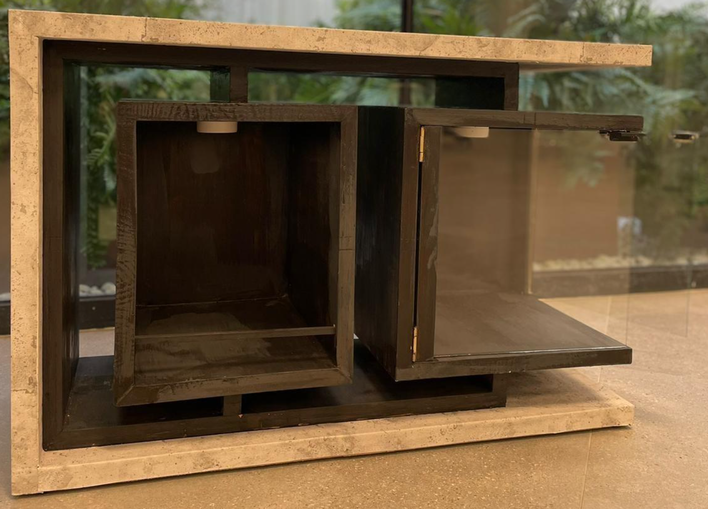
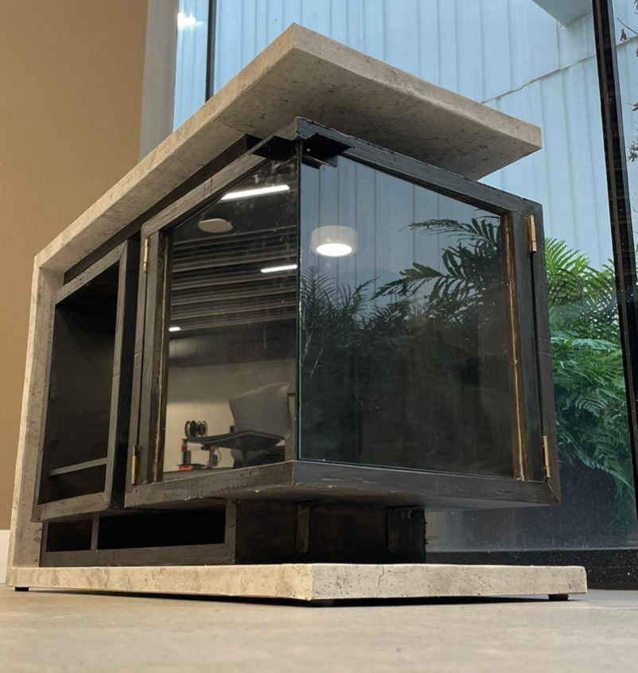
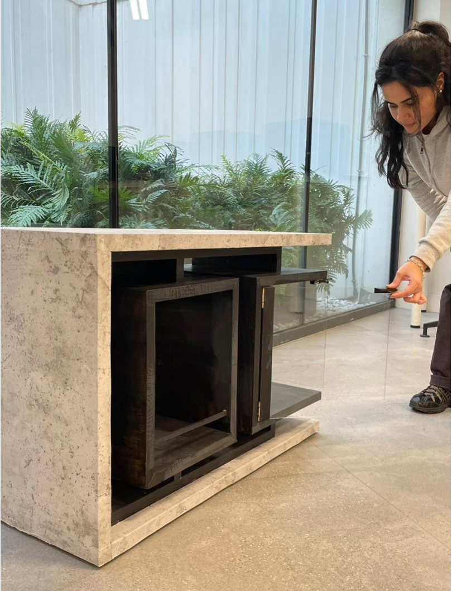

Bar Cabinet
El Bar Cabinet es un mueble multifuncional que combina diseño contemporáneo con acabados artesanales. Diseñado para espacios modernos, ofrece una solución elegante para almacenamiento y exposición de bebidas.



Detalles Técnicos
- Materiales: Madera de pino, MDF y vidrio .
- Dimensiones: 120 x 80 x 40 cm.
- Proceso: Construcción artesanal con técnicas de carpintería avanzadas.
Lo que dicen sobre el proyecto
"Un mueble único que une diseño y funcionalidad. Perfecto para mi espacio."